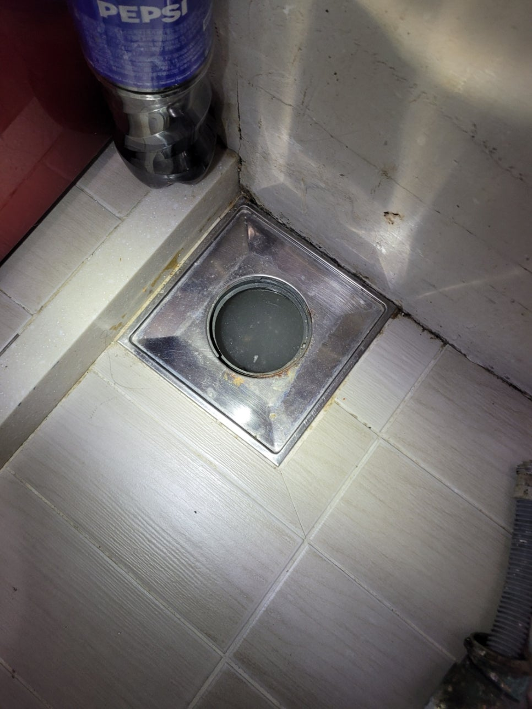
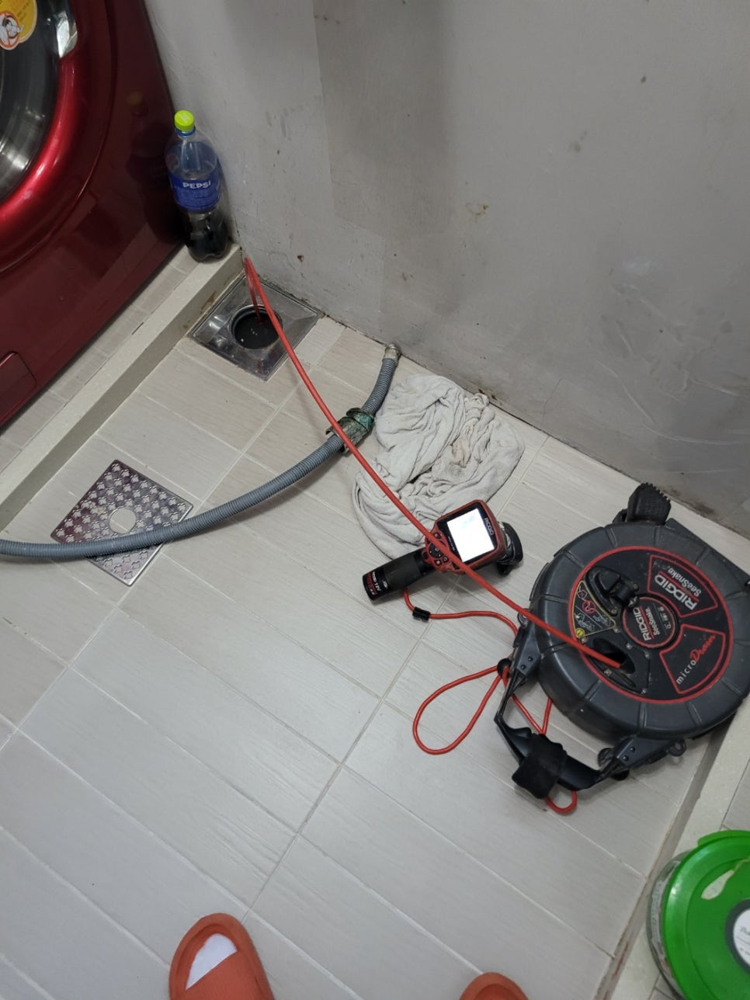
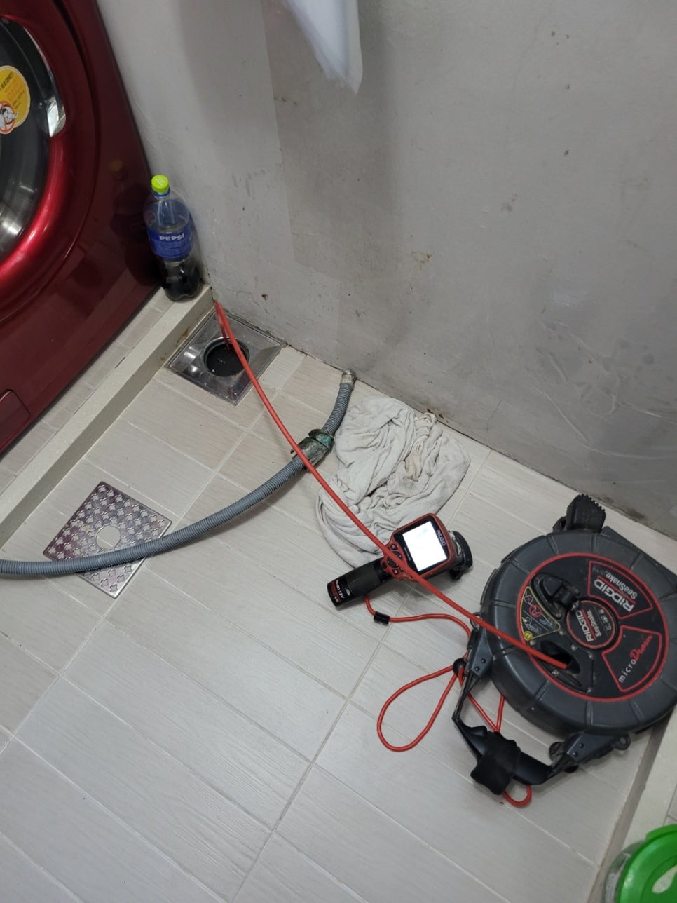
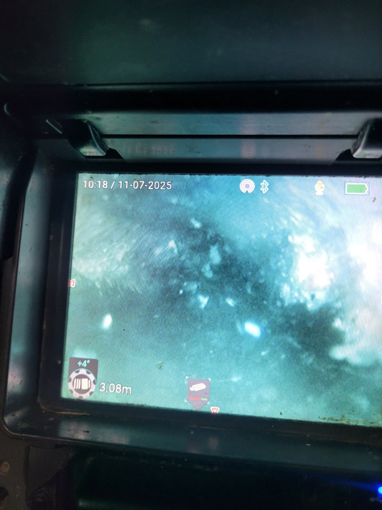
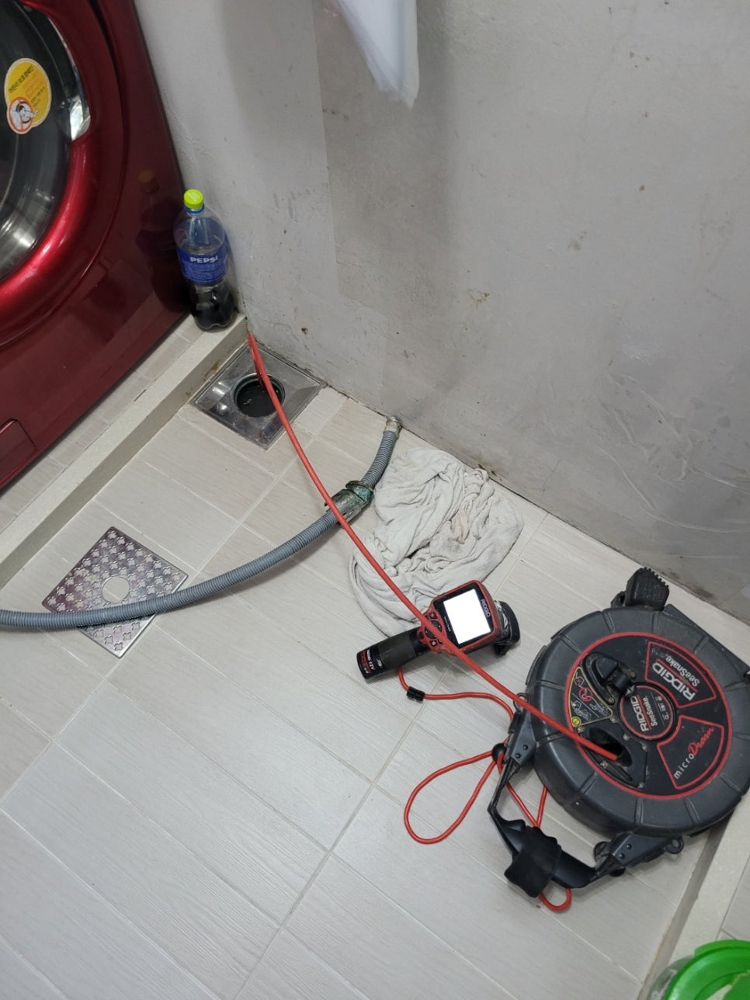
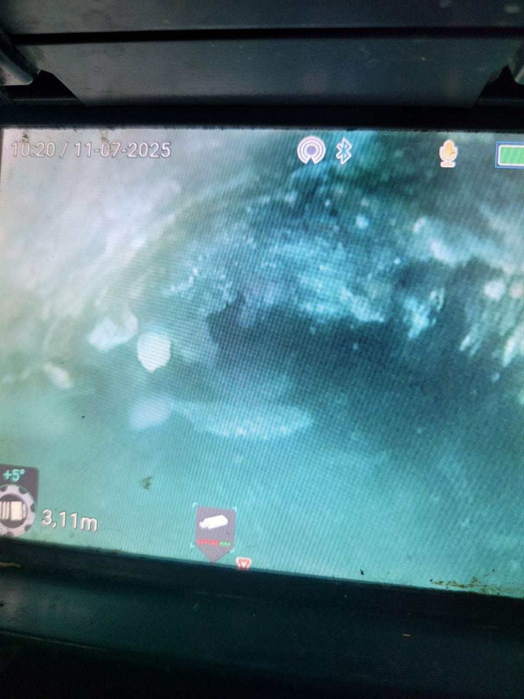

🏠 향남 화장실배관막힘 역류 석회제거 뚫는곳 설비업체
화성 향남 싱크대막힘 전문 시공 후기

📋 작업 개요
- 위치: 화성 향남, 향남, 화성
- 서비스 유형: 싱크대막힘, 변기막힘, 하수구막힘, 배관막힘, 맨홀막힘, 누수수리, 역류해결, 뚫는업체, 배관청소, 설비공사
- 작업 일시: 2025. 7. 19. 22:22
- 업체명: 하수구수사대 (010-5615-2118)
🔍 문제 상황
안녕하세요.
설비전문업체 "하수구수사대" 입니다.
향남 화장실배관막힘 역류 석회제거 뚫는곳 설비업체
물에 원활히 녹기 어려운 고체 찌꺼기가 유입될 경우 파이프 내부는 화장실막힘 베란다막힘 무엇이든 여러가지 물질로 잔뜩 찰 수 있는데요.
특히 슬러지가 끈적끈적하게 뭉쳐지게 되면 훨씬 강한 덩어리가 됩니다.
웬만하면 단면이 정확하게 나올 수 있게 종종 관로 안의 오염물 정비를 해주고 배수구 클리너 청소도 말끔하게 작업을 해주셔야 해요.
이번에 방문한 곳은 하수구막힘 이상으로 급하게 작업을 요청했던 장소에요.
대개 반복되는 변기 막힘 문제였어요.
문제가 나타난 위치는 바로 메인 하수구였습니다.
여러 모양의 이물질이 쌓이면서 하수가 순조롭게 흐르지 않았어요.
먼저 화장실같은경우 수많은 하수구 시설이 시공되어 있어 시설 하나하나 모두 검사를 해야 하는 장소입니다.
이따금씩 막힌곳만 간략하게 정리하고 작업을 마치는 분들도 많이 있지만 화장실은 원체 하수가 흘러오는 영역이 많고 발생 오수의 종류에 따라 독립적으로 관거가 만들어지기 때문에 포괄적인 유지관리를 하고 상세한 정비가 필요해요.
내시경 카메라를 이용해 확인해보니 화장실막힘 원인은 머리카락 등의 여러 물질이 체크됐어요.

🔎 원인 분석
💡 전문가 진단: 정밀 진단 장비를 사용하여 슬러지의 고착 여부를 판명하고 타격/세척 작업을 실시했습니다.
짐작하지만 세면대를 쓰면서 투입된 머리카락을 포함한 다양한 외부 물질이 같이 합쳐져서 막힘 문제를 유발하게 된 상황으로 이해됐어요.
욕실에서 사용되는 세정제 안에는 자체 점성이 포함되어 있어 슬러지가 합쳐지면 빠르게 덩어리를 형성하게 되거든요!
시간이 갈수록 석회질의 불순물과 같이 섞이게 되면 굳은 알갱이가 될 수 있어요.
위와 같은 오염물의 상태는 배수관을 더욱 빠르게 막히게 하기 때문에 종국에는 배관 막힘이 일어날 수밖에 없어요.
고객님께서도 맨 처음에는 물의 흐름이 제대로 이루어지지 않아 불편하긴 했지만 큰 상태로 여기지는 않으셨다고 해요.
그러나 슬러지가 지속적으로 축적되면서 완벽하게 단면을 막아버려 하수가 역행하는 상황이 생겼습니다.
특히 불쾌한 냄새도 과도하게 발생했다고 얘기해주셨는데 배관 속에 구성된 찌꺼기가 부패한 것 같았습니다.
위생적으로도 문제지만 집안사람들의 건강에도 나쁜 영향을 야기할 수 있어 될 수 있는 대로 배관 관리를 서둘러 실행하도록 하고 문제가 반복된다면 전문업체에 요청하는게 좋아요.
배관 속에 쌓여있는 이물질 관리를 위해 먼저 석션기를 사용해서 청소를 해나갔어요.
단면을 면밀히 살펴보면 오염물질이 통로를 가득 채우고 있어 새로운 장비가 들어갈 수 있는 여유 공간이 나오지 않았거든요.
석션을 이용하여 가능한 많은 양의 폐기물을 제거하고 단면을 확보하며 철저하게 슬러지를 제거했습니다.
배관 안에 들어있는 찌꺼기는 그 유형이 굉장히 각양각색인만큼 장비 역시 배관 구조에 맞게 써야합니다.
스프링 시설 등을 동원하여 배관의 적체되어 있는 이물질을 천천히 없애 드렸어요.
더욱이 관로의 단면이 바뀌는 위치에서 오염 물질의 퇴적 현상이 심하게 나타나고 있었는데요.

🔧 작업 과정
이 지점은 오수가 제거돼도 유속이 순조롭게 이루어지지 않는 부위로 점도가 있는 입자가 점차적으로 축적될 수 있는 곳이기도 했습니다.
먼저 스프링 기기를 사용해서 배수관의 단면을 가로막는 불순물들을 거의 다 제거하고 적정한 유속이 구성될 수 있도록 관리했습니다.
저희 예상보다 정비해야 할 부위가 더 많아서 한층 더 신중하게 점검이 이루어졌어요.
마침내 스케일링 작업을 하는 도중에 배관에 단단함을 망가뜨릴 수 있는 염려가 있어 내시경 카메라 장비를 써서 공사를 완료해드렸어요.
카메라 설비는 침전된 불순물의 대부분을 확인할 수 있기 때문에 굉장히 효과적으로 하수구막힘 관리를 할 수가 있어요.
관로에 대한 안전성은 공사자가 꼭 관리해야 하는 요소인만큼 숙련된 업체가 좀 더 완벽하게 작업할 수 있습니다.
예상보다 불순물을 처리하는 중에 배관 자체가 손상되는 경우가 제법 많거든요.
말씀드린 문제는 앞으로 누수로 이어지고 새어 나온 하수는 근처 토사 또는 건축물을 훼손시키기 때문에 중대한 문제로 번질 수 있어요.
저희들은 시공 중에도 무조건 내시경 장비를 활용하고 있고 처리가 완료되면 바로 결과를 카메라 장비로 보여드립니다.
그러다 보니 한층 더 이물질 제거 작업에 신뢰도가 올라가요.
하수구막힘에 수거된 불순물만 하더라도 상당량 처리 되었습니다.
저희가 활용하는 하수구 시설은 다양한 형식의 불순물이 투입되는 장소라고 생각하시면됩니다.
이 과정에서 만들어진 끈적임이 같이 뭉쳐지면서 파이프 막힘을 발생시킬 수 있어요.
딱딱한 덩어리는 금방 상하기도 하고 이따금씩 파이프의 약한 곳에 문제를 발생시킬 수 있기 때문에 꼭 기술자에게 정비받을 수 있게 미리미리 해결해야합니다.
배관 내부에 만들어져 있는 슬러지의 대부분을 제거하여 단면을 말끔하게 관리하고 적정 유속이 구성될 수 있게 상태를 정비했습니다.
가늠한 것보다 제거한 불순물 자체가 많다는 것은 보게 될 거예요.
카메라 장비를 이용하여 배관 내부를 검사해보면 우리가 사용하고있는 배관의 직경이 생각보다 작다는 사실을 알 수 있어요.
결과적으로 사용자가 올바르게 정비를 해야만 단면을 보존하고 적정 유속이 나올 수 있게 설비를 관리할 수 있어요.
스케일링 절차를 통해 정리된 내부 컨디션은 보시는 것처럼 청결하게 작업된 것을 확인 가능합니다.
단면이 제대로 만들어지면서 최초 배관을 계획할 때 의도했던 통수량도 유지할 수 있습니다.
모든 작업은 작업전에 의뢰인에게 면밀하게 말씀을 드리고 있으며 작업을 마친 후 결과 상태도 모두 다 확인하면서 이상이 있는 지점을 꼼꼼하게 관리가능하도록 제가 손수 설명해드립니다.


✅ 작업 완료
고객님 스스로 하수 구조물에 대한 특징을 이해한다면 화장실막힘 베란다막힘 뭐든지 배관의 내구성을 유지하면서 시설의 사용 기간도 장시간 유지할 수 있습니다.
하수구수사대 누수탐지 010 2340 2118
경기도 화성시 향남읍 상신하길로328번길 26 5층 505호
#향남하수구막힘 #향남싱크대막힘 #향남싱크대역류 #향남배수관막힘 #향남배관뚫는곳 #향남설비 #향남맨홀막힘 #향남하수구뚫는업체 #향남변기막힘
#화성하수구막힘 #화성싱크대막힘 #화성싱크대역류 #화성하수구역류 #화성화장실막힘 #화성설비 #화성하수구뚫는곳 #화성하수구뚫는업체
#화성변기막힘




⚠️ 베란다 누수 및 방수 관리 방법
- ✅ 비가 많이 올 때 창틀 주변이나 아래층 천장에 얼룩이 생기는지 정기적으로 확인해 보세요.
- ✅ 우수관 주변 실리콘 마감이 들뜨거나 깨진 틈새가 있는지 손상 여부를 수시로 체크하세요.
- ✅ 베란다 바닥 타일의 줄눈(메지)이 소실되면 그 틈으로 물이 침투하여 누수가 유발됩니다.
- ✅ 누수 의심 증상 발견 시 방치하면 아래층 손실이 커지므로 즉시 전문가의 진단을 받으십시오.
💡 핵심 정리
- 확실한 장비 작업(내시경 점검 및 샤프트 스케일링)으로 원인을 뿌리 뽑습니다.
- 작업 후 1년 이내에 동일한 부위 재발 시 100% 무상 A/S 서비스를 보장합니다.
- 서울 · 경기 · 인천 전 지역에 24시간 언제든 긴급 출동할 수 있도록 항시 대기 중입니다.
❓ 자주 묻는 질문 (FAQ)
🚨 화성 향남 싱크대막힘 문제로 고민이신가요?
정확한 원인 진단과 확실한 시공으로 재발 없는 해결을 약속드립니다.
24시간 긴급 출동 | 서울 · 경기 · 인천 전지역 | 1년 내 재발 시 무상 A/S